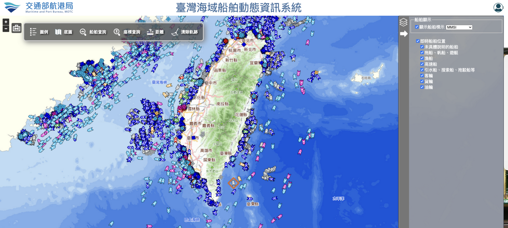

God's Eye View × 臺灣海域船舶動態資訊系統
從本機 Docker 實測、Claude Code 逆向情報挖掘，到臺灣航港局 9,000+ 艘官方雷達源對接、數據解耦與微光學縮放治理，再到五大精進：路況、MCP、7 天航跡庫、本機 AI 參謀與分層快取的全紀錄。

任務緣起與神之眼底層架構
本次專案始於對開源 3D 全域即時態勢感知系統 God's Eye View 的深度研究。我們透過 DeepWiki MCP 端點完整抓取了 12 大章節、42 篇核心架構文件（共 7,984 行），揭露了其領先業界的三大核心機制：
⚡ 核心引擎三大支柱
- Render Governor（渲染主管機關）：拋棄傳統計時器輪詢渲染，基於 holds 集合動態切換按需單幀渲染，待機記憶體僅 105 MiB。
- Label Arbiter（標籤仲裁器）：採用螢幕網格防碰撞與「現任者加分制（Incumbency Bonus = 250）」，徹底終結標籤抖動閃爍。
- Vertical Datum & Floor-Hold（垂直大地高程）：運用 EGM96 公式與三級指數平滑過渡，徹底解決飛機與船隻在三維地球網格中的陷地破面問題。
scripts/docker-start.mjs，嚴格將服務綁定於 127.0.0.1:4173，並透通容器 Gateway 建立安全的 Provider Settings 金鑰對等通道。透過 uv run verify_gev.py 實現無全域污染的 Playwright 自動化驗收。
🖥️ 介面佈局哲學：左側全域大盤 vs. 右側臺灣專精台
在人機協作過程中，人類掌舵者精準提問：「所以港務局的數據源放右邊，aisstream及其他來源放左邊？」 這正是現代 C4ISR 戰情室的人機工效學核心：
- 👈 左側抽屜（全域戰情總控）：掌控宏觀全局，涵蓋全球民航（ADS-B）、軍用機、CelesTrak 人造衛星、交通部 CCTV 以及全球 AISStream 遠洋航道。
- 👉 右側抽屜（臺灣海域專屬動態台）：專注臺灣海峽微觀態勢，完整繼承航港局官方 8 大船型篩選邏輯、艘數即時統計與單船規格卡片。
兩側面板皆支援獨立折疊（左側快捷鍵 F，右側點擊 🚢 ➔ 手柄），使中央 3D 海圖空間保持最大化與最高沈浸感。


2 實時切換後製 GLSL 著色器濾鏡。
數據源的曲折與驚喜挖角
實機啟動後，我們面臨了第一個重大瓶頸：預設的全球船舶端點 /api/vessels 回傳 503 missing-key，因為官方 AISStream 依賴個人註冊的 API Key 建立 WebSocket 長連線。
在填入 Key 重啟後，AISStream 成功拉進 4,900+ 艘全球商船。然而隨後人類帶來了一個顛覆性的重大情報：
https://mpbais.motcmpb.gov.tw/aismpb/tools/geojsonais.ashx，完全不需要金鑰或帳號，只需帶 Referer，單次直接回傳全台海域 9,300+ 艘高精即時 GeoJSON（3.6 MB）！」
| 比較項目 | 全球 AISStream | 🇹🇼 交通部航港局 (MOTC MPB) |
|---|---|---|
| 金鑰需求 | 需個人註冊 API Key | 完全免金鑰（公開服務） |
| 台灣海域密度 | 幾百艘（全球均分） | 單次全台 9,000 ~ 9,300+ 艘（極致密集） |
| 通訊協定 | WebSocket 長連線 | HTTP REST 快照（支援 40s 快取） |
| 雷達來源 | 全球愛好者站點轉發 | 台灣沿海燈塔與 VTS 雷達站第一手數據 |
🖥️ 介面佈局哲學：左側全域大盤 vs. 右側臺灣專精台
在人機協作過程中，人類掌舵者精準提問：「所以港務局的數據源放右邊，aisstream及其他來源放左邊？」 這正是現代 C4ISR 戰情室的人機工效學核心：
- 👈 左側抽屜（全域戰情總控）：掌控宏觀全局，涵蓋全球民航（ADS-B）、軍用機、CelesTrak 人造衛星、交通部 CCTV 以及全球 AISStream 遠洋航道。
- 👉 右側抽屜（臺灣海域專屬動態台）：專注臺灣海峽微觀態勢，完整繼承航港局官方 8 大船型篩選邏輯、艘數即時統計與單船規格卡片。
兩側面板皆支援獨立折疊（左側快捷鍵 F，右側點擊 🚢 ➔ 手柄），使中央 3D 海圖空間保持最大化與最高沈浸感。


後端架構解耦與雙軌數據流
初次實作時，我們將台灣航港局資料與 AISStream 合併在 /api/vessels。人類掌舵者隨即指出關鍵架構缺陷：「AISStream 和台灣航港局數據源要分開！」
依照開發紀律「先備份再修改」，我們進行了後端架構重構，將兩者徹底解耦為雙軌平行架構：
// 1. 純全球遠洋數據流（回復純粹 AISStream）
GET /api/vessels -> source: "AISStream" (約 400 艘全球遠洋大船)
// 2. 臺灣海域專屬官方高精數據流（內建 40 秒記憶體快取防護）
GET /api/taiwan-vessels -> source: "MOTC Taiwan MPB" (9,039 艘臺灣海域雷達點位)由於航港局 GeoJSON 單次達 3.6 MB，若多個前端同時連線會嚴重消耗政府伺服器頻寬。我們在
mpb-taiwan.js 內建 40 秒快取鎖定，並改用 Node 原生 node:https 串流下載，徹底杜絕高頻請求風險。
仿官方「臺灣海域船舶」戰情台
為了完美復刻使用者上傳的航港局介面，我們在前端右上方打造了獨立的 TaiwanVesselsPanel.vue 戰術抽屜面板：
📋 8 大船型分類與即時過濾矩陣
提供母開關「即時船舶位置」（全選 / 全消），並將國際 IMO 數字代碼精確映射為 8 大分類，毫秒級響應：
🖥️ 介面佈局哲學：左側全域大盤 vs. 右側臺灣專精台
在人機協作過程中，人類掌舵者精準提問：「所以港務局的數據源放右邊，aisstream及其他來源放左邊？」 這正是現代 C4ISR 戰情室的人機工效學核心：
- 👈 左側抽屜（全域戰情總控）：掌控宏觀全局，涵蓋全球民航（ADS-B）、軍用機、CelesTrak 人造衛星、交通部 CCTV 以及全球 AISStream 遠洋航道。
- 👉 右側抽屜（臺灣海域專屬動態台）：專注臺灣海峽微觀態勢，完整繼承航港局官方 8 大船型篩選邏輯、艘數即時統計與單船規格卡片。
兩側面板皆支援獨立折疊（左側快捷鍵 F，右側點擊 🚢 ➔ 手柄），使中央 3D 海圖空間保持最大化與最高沈浸感。


🚢 ➔ 瞬間折疊，保留完整海圖視野。
圖標工藝演進與縮放治理攻堅
這是整個人機協作過程中最具技術張力、最深刻的反思與修復歷程。我們歷經了三次關鍵技術升級：
⚡ 演進 1：為什麼小 PNG 比動態 SVG 直通 GPU 紋理更快？
使用者曾提問：「是 SVG 比較快還是小 icon 比較快？」
圖形學實測證明：GPU 著色器無法直接渲染 SVG 向量。SVG 必須經過主執行緒 DOM 解析、Base64 解碼與光柵化；而預先生成的小 PNG（1KB）由瀏覽器 C++ 硬體解碼直接進入 GPU 顯存，被 Cesium 自動合併進 Texture Atlas（單一紋理圖集），9,000 艘船僅需 1 次 Draw Call！
🎨 演進 2：Awwwards / FWA 獲獎級微光學重構
依照最高數位工藝標準，我們放棄粗糙線條，改以 Chromium 向量渲染器雕琢 8 款具備「Cybernetic 螢光雙漸層、微型雷達刻度、同心鑽石準星與碳黑防護外殼」的頂級圖標，並生成獨立設計規格書：
💥 演進 3：重大事故反思與縮放治理（Semantic Decluttering）
事故根因：原圖導出 128px 加上固定 0.72 縮放，導致每艘船在 630km 高空佔據了 92 像素，9,000 艘船直接把海峽疊爆！
徹底修復（海事級專業治理）：
- 實體圖片重洗為 48×48（2x Retina 高清抗鋸齒）。
- 鎖定螢幕黃金像素（Screen-Space Fixed 13.4px）：設定
scale: 0.28，不論相機拉近拉遠，螢幕上永遠鎖定在 13 像素微巧箭頭。 - GPU 著色器視距抽稀（DistanceDisplayCondition）：
- 動態商船與航行中船隻（SOG ≥ 1.5 節）：全域 8,000km 視野可見。
- 停泊在內港不動的小船：拉近至 280km 港口特寫時才展開，高空全景自動隱藏，徹底終結港口糊成色塊的窘境！
🖥️ 介面佈局哲學：左側全域大盤 vs. 右側臺灣專精台
在人機協作過程中，人類掌舵者精準提問：「所以港務局的數據源放右邊，aisstream及其他來源放左邊？」 這正是現代 C4ISR 戰情室的人機工效學核心：
- 👈 左側抽屜（全域戰情總控）：掌控宏觀全局，涵蓋全球民航（ADS-B）、軍用機、CelesTrak 人造衛星、交通部 CCTV 以及全球 AISStream 遠洋航道。
- 👉 右側抽屜（臺灣海域專屬動態台）：專注臺灣海峽微觀態勢，完整繼承航港局官方 8 大船型篩選邏輯、艘數即時統計與單船規格卡片。
兩側面板皆支援獨立折疊（左側快捷鍵 F，右側點擊 🚢 ➔ 手柄），使中央 3D 海圖空間保持最大化與最高沈浸感。


實機成果驗收與操作指南
目前「神之眼 · 臺灣海域戰情系統」已處於最穩定、流暢且具高視覺張力的運行狀態：
🕹️ 瀏覽器即時體驗專屬連結
點擊以下連結，可直接進入最佳觀測視角：
- 鍵盤
F：開啟/收合左側全系統圖層面板（可單獨控制全球 AISStream、衛星、軍機）。 - 鍵盤
C：一鍵隱藏全台公路 CCTV 鏡頭。 - 右側
🚢 ➔手柄：隨時收合/展開航港局 8 大分類篩選器。 - 點擊任意船隻：即時彈出 MMSI、船名、呼號、航速 SOG、航向 COG 與經緯度卡片。
🔄 全自動即時更新與移動機制（無需手動 Reload）
人類掌舵者提問：「這些數據源呈現在圖台上，也會一直更新移動嗎，還是要我reload?」
答案：全系統 100% 自動即時更新與位移，完全不需要手動按 F5 重新整理！
| 數據圖層 | 自動更新週期 | 背後更新機制 | 視覺航跡動態 |
|---|---|---|---|
| 🇹🇼 臺灣海域船舶 (MOTC) | 每 40 秒 | 前端定時向 /api/taiwan-vessels 抓取最新快照，自動進行 9,000+ 艘 MMSI 差量比對 |
船隻自動滑行至新坐標、自動旋轉至新航向（COG）；內建 requestRender() 顯卡喚醒，即使雙手離開滑鼠也能每 40 秒準時跳新航位 |
| 🛰️ 人造衛星 (CelesTrak) | 每秒 (60 FPS 連續) | 前端基於 SGP4 天體軌道力學公式，依當下毫秒即時推算 | 肉眼可見持續等速滑行，可即時追蹤國際太空站（ISS）繞行地球 |
| ✈️ 民航與軍機 (ADS-B) | 每 5 ~ 10 秒 | 自動向開源伺服器輪詢最新應答機封包 | 飛機沿航線持續平滑向前推進 |
| 🚢 全球 AISStream | 每 15 ~ 30 秒 | 後端單一 WebSocket 長連線接收衛星推播，前端定時輪詢快照 | 遠洋大型輪船按固定節奏更新船位 |
💡 動態驗證秘訣：在右側面板找一艘航速較快（如 15~20 節）的貨輪點擊選取，保持視角觀察 1~2 分鐘，右側卡片的經緯度與時間戳會自動跳動，海面上的小箭頭會沿著航線默默向前推進！
⏹️ 容器日常維護指令
# 1. 暫停/關閉容器（保留所有快取與資料）
cd /Users/lanss/projects/2_Practice/tools/1151104_gods-eye-view/repo
docker compose down
# 2. 下次啟動（背景運行，秒級喚醒）
docker compose up -d
# 3. 執行全自動化 Playwright 驗收套件
uv run 1151104_gods-eye-view/verify_gev.py本專案完美詮釋了「人類掌舵設定邊界、抓出破綻；AI 負責高強度程式碼迭代、數據提取與實體檢驗」的協作典範。面對 92px 比例崩潰的突發狀況，工程手段取代了盲目猜測，最終以精準的 WebGL 著色器抽稀與像素錨定，打造出一套禁得起 Awwwards 級視覺考驗的現代海事戰情儀！
最新戰情數據指標
五大精進完成後，系統已從「看得到船」進化成「查得到歷史、問得到答案、上游故障也不崩潰」。以下指標都標明時點與口徑，避免把不同時間的數字混在一起。
| 指標 | 數值 | 時點與口徑 |
|---|---|---|
| 台海船舶 | 9,183+ 艘 | 11-04 航跡庫累計不重複 MMSI，非單次快照；單次快照見下一列 |
| 即時快照 | 8,932 → 9,112 艘 | 11-04 MCP 實測 8,932；11-05 01:04 為 9,112 |
| 航跡庫 | 18,541 點／9,183 艘／2,219 KB | 11-04 容器運行約 29 分鐘 |
| 航跡庫早期快照 | 8,237 艘／13,424 點 | 11-04 22:01，第三次快照 |
| 航跡庫最新 | 10,873 艘／41,290 點／4,933 KB | 11-05 01:04 |
| 國道路段 | 453 段，均速 84 km/h | 11-04 實測；均速隨時段變動，11-05 01:04 為 95 km/h |
| 路況回應 | 冷啟動 197 ms、到期刷新 87 ms | Step 9 單次量測；修改前 6,047 ms、6,007 ms |
| AI 參謀 | 100% 零付費 | 本機 Ollama gemma4:e4b；11-05 實跑 26.5 s，通過核驗 |
五大精進落地歷程
這五項並非各自獨立。航跡庫逼出資料契約修復，AI 參謀需要乾淨的 data_health，分層快取則解決路況被失聯端點拖慢的問題。
taiwan_vessels_in_area"] --> S6["Step 6｜陸地路況
TISVCloud 事件與車速"] S6 --> S7["Step 7｜AI 參謀
檢索・Ollama・Grounding"] S7 --> S8["Step 8｜7 天航跡庫
修復資料契約後才入庫"] S8 --> S9["Step 9｜分層快取
PBS 退避・路網 24 h"] S9 --> S10["Step 10｜文件重構
架構圖與實測指標"] S10 --> S11["Step 11｜跨平台移植
Windows Zero-Admin 實戰驗證"] S11 --> S12["Step 12｜數據時效解構
Awwwards HUD 大盤與環境感知"]
| 精進項目 | 交付內容 | 最重要的驗證 |
|---|---|---|
| ① 陸地動態 | /api/taiwan-traffic、路況開關、事件徽章 | 453 路段；PBS 自動降級 |
| ② MCP 打通 | taiwan_vessels_in_area、find_vessel、taiwan_traffic_events | 11-05 stdio 實呼叫 3 支臺灣工具成功 |
| ③ 航跡庫 | NDJSON 差量去重、/api/taiwan-vessel-tracks、taiwan_vessel_track | 8,933 筆快照的 epoch 全部不等於抓取時間 |
| ④ AI 參謀 | Grounding Validator、PAT、AI 面板 | 檢索最慢 25.6 ms；端到端未降級 |
| ⑤ 分層快取 | PBS 背景退避、路網 24 h 回退 | 冷啟動 6,047 ms → 197 ms；taiwan-traffic.test.mjs 8 項 |
| ⑥ 跨平台移植 | run-no-admin.bat / stop-no-admin.bat、零括號 GOTO 防崩潰架構、純 ASCII 指令集、手把手實戰安裝指引 | Windows 11/10 實機實測開跑；攻克 Big5 (CP950) 衝碼、CMD 巢狀括號靜默閃退、.gitignore 誤殺 353 個 data 模組 |
| ⑦ 數據時效與 HUD 大盤 | data-sources.html、DATA_SOURCES.md、Awwwards/FWA 得獎級戰術 HUD 互動 SVG 大盤（Bézier 動態流光管線）、左下角微光學直連按鈕、環境感知智慧彈窗（方案 A） | 9 大領域 20+ 類數據源三層時效剖析（不可變動/不用變動/動態頻率）；Codex Exec 語法結構檢驗；GitHub Pages 與本機雙向感知零連線崩潰 |